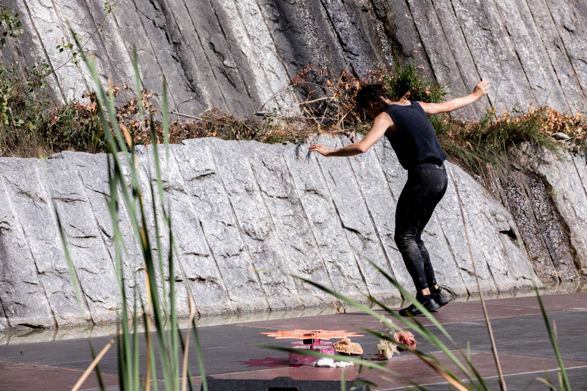

Il Segreto
Il Segreto è un'azione coreografica per una performer e tre Rose Spinner, macchine sonore rotanti immaginate e realizzate con Francesco Cavaliere. Gli elementi in scena si alternano, si mescolano e si sovrappongono senza escludersi, coesistono e danno vita a un ecosistema geograficamente prossimo, aperto, terreno, indeterminato, multi-tempo, in cui l’umano diventa multiforme e alieno.
La danza si compone e si decompone continuamente, dando l’impressione che il corpo assuma sempre diverse forme e si componga di nuove sostanze, allineandosi o scostandosi dagli elementi di cui è composta la scena.
Il Segreto è parte del progetto NO RAMA, ideato e creato con Marta Capaccioli, Lucrezia Palandri, Giulia Pastore, Jules Goldsmith, Francesco Cavaliere. La sua pratica è incentrata sul racconto velato, ma celato. La parola sussurrata diventa gesto e motore dello spostamento della performer, risuona nel corpo e si perde nello spazio, creando un ulteriore elemento, quasi gassoso, che si mescola alle altre forme di vita umane e non umane.
Produzione Cab 008.
Coproduzione Teatro Metastasio di Prato e FOG Triennale Milano Performing Arts.
Con il sostegno di L’Arboreto – Teatro Dimora di Mondaino, Armunia / Festival Inequilibrio,
Centro nazionale di produzione / Virgilio Sieni, spazioK.Kinkaleri.
Con il sostegno di Regione Toscana, MiBACT e Comune di Firenze.
Il progetto è stato realizzato con il contributo di ResiDance XL – luoghi e progetti di
residenza per creazioni coreografiche, azione della Rete Anticorpi XL / Network Giovane Danza
D'autore coordinata da L’Arboreto – Teatro Dimora di Mondaino.
Ideazione
Annamaria Ajmone
Performer
Annamaria Ajmone / Marta Capaccioli / Lucrezia Palandri
Musiche originali e sistemi di diffusione
Francesco Cavaliere
Abito
Jules Goldsmith
“Nel frattempo a dispetto della natura, a dispetto di tutte le poltiglie grigie le cose reali si scontrano e si dimenano. Alcune di esse sbucano all’improvviso perché la fabbrica funziona male o fin troppo bene, il petrolio fuoriesce dalla sua voragine originaria e si sversa nel golfo del Messico, i raggi gamma emettono plutonio per ventiquattromila anni; gli uragani si formano a partire da enormi sistemi temporaleschi nutriti dal calore dei combustibili fossili; l’oceano di tasti telefonici si estende sempre di più. Paradossalmente il capitalismo ha scatenato miriadi di oggetti contro di noi, in tutto il loro multiforme orrore e sfavillante splendore. Duecento anni di idealismo, duecento anni in cui gli esseri umani si sono collocati al centro dell’esistente, e ora gli oggetti si prendono la loro rivincita. Una rivincita terribilmente potente antica, duratura e pericolosamente precisa, invade ogni cellula del nostro corpo.”
Timothy Morton, "Iperoggetti"
Ascolta Francesco Cavaliere
STAMPA
"Annamaria Ajmone: la danza, il processo, l’imprevedibile", Mattia
Cappelletti
FLASHART (2020)